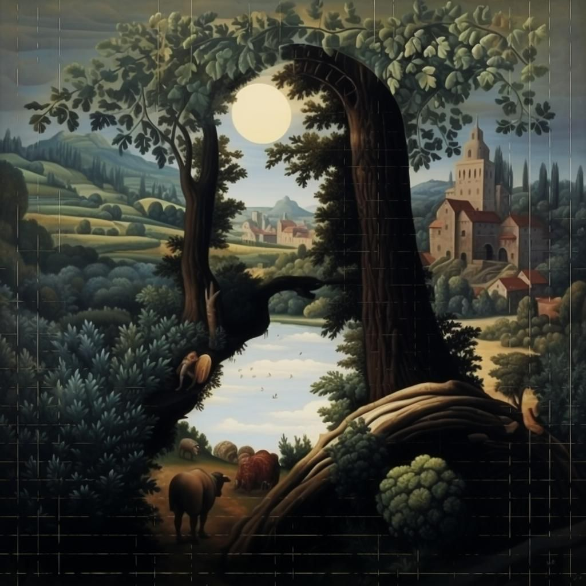

מצליחים לזהות?
פורסם במקור ב LinkedIn
מצליחים לזהות?
היכולות של מידג'רני generative AI יחד עם היצירתיות של בני באדם מפתיעות בכל פעם מחדש
בא לי פוסטר כזה בחדר!
קרדיט: הופיע במקור בקבוצת ווצאפ של בינה מלאכותית HACKIT שיתוף של אלחנן חבר בקהילה
